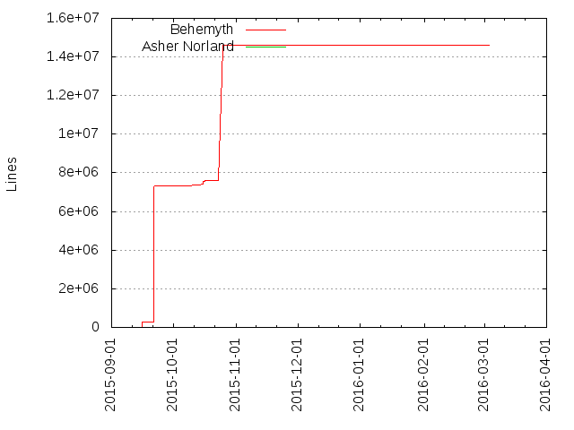
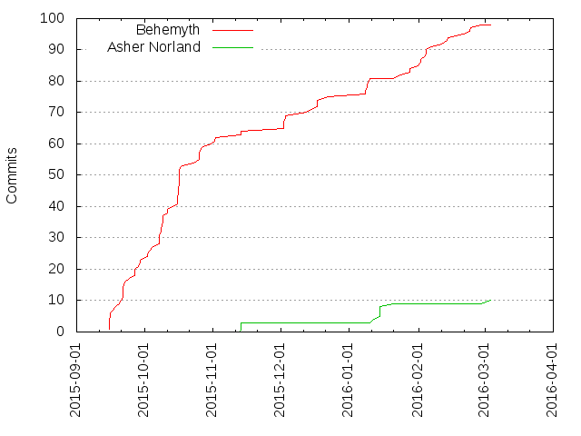

Authors
| Author | Commits (%) | + lines | - lines | First commit | Last commit | Age | Active days | # by commits |
|---|
| Behemyth | 98 (90.74%) | 14620986 | 7350537 | 2015-09-15 | 2016-02-28 | 165 days, 22:05:16 | 49 | 1 |
| Asher Norland | 10 (9.26%) | 1384 | 680 | 2015-11-13 | 2016-03-04 | 111 days, 11:15:46 | 5 | 2 |


| Month | Author | Commits (%) | Next top 5 | Number of authors |
|---|
| 2016-03 | Asher Norland | 1 (100.00% of 1) | | 1 |
| 2016-02 | Behemyth | 13 (100.00% of 13) | | 1 |
| 2016-01 | Behemyth | 10 (62.50% of 16) | Asher Norland | 2 |
| 2015-12 | Behemyth | 11 (100.00% of 11) | | 1 |
| 2015-11 | Behemyth | 4 (57.14% of 7) | Asher Norland | 2 |
| 2015-10 | Behemyth | 37 (100.00% of 37) | | 1 |
| 2015-09 | Behemyth | 23 (100.00% of 23) | | 1 |
| Year | Author | Commits (%) | Next top 5 | Number of authors |
|---|
| 2016 | Behemyth | 23 (76.67% of 30) | Asher Norland | 2 |
| 2015 | Behemyth | 75 (96.15% of 78) | Asher Norland | 2 |
| Domains | Total (%) |
|---|
| gmail.com | 98 (90.74%) |
|---|
| rpi.edu | 10 (9.26%) |
|---|